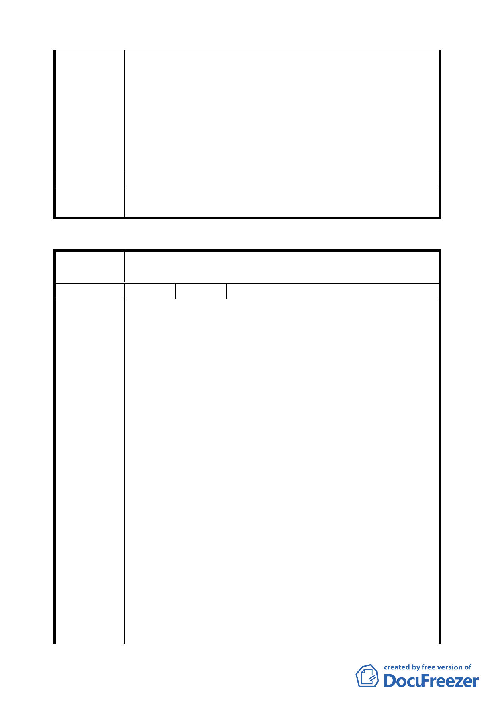

寬 3 公尺左右，或左右各４公尺車行通道，中央留２公
尺綠地，可採用 Block 方式設計，種植，花草，樹木，
樹下甚至還可加些休閒椅，進社區巷口可用活動護欄，
住戶有需求卸貨或緊急狀況時才打開，這樣可維持到高
品質住宅。
七、主辦單位，遇到問題，應設法解決問題，不要以變更方
法，來逃避問題所在，應爲未來長遠考量，留給後代子
孫綠的好生活品質。
建 議 辦 法 請北投 157 號綠地保留地，維持原計畫綠地保留地。
委員會議
決議
同意發展局規劃仍維持綠地。
臺北市都市計畫委員會公民或團體陳所提意見綜理表
案
名
臺北市北投區都市計畫通盤檢討（細部計畫）案-----------
榮總行義生活圈
編
號1
陳情人 羅吉煊
建議理由：
一、基於衡平精神：按台北市政府６６．０６．１１府工二
字第五四六六九號公告石牌路二段三五七巷底及原弧形
迴車道擴張直徑為十五公尺之細部計畫，係採變更道路
中心樁向西南端偏移而擴寬，並非按原既有巷道中心現
兩側同時加大迴車道直徑面積，因不當偏移巷道中心
樁，致形成巷道末端東側陳姓地主原先提供為道路用地
部份變更為建地，相反，對巷道西南側之異議人所有土
地，則需按變更之細部計畫提供建地為道路用地。台北
市政府工務局六十九年間針對本案所簽辦之公文內稿黃
南淵副局長一批示：本件修正計畫並非全符合公平原
陳情理由
則。然台北市政府對六十六年間所公告該巷道不公平之
細部計畫始終維持原案不願更動，顯然違反公平原則，
況且目前使用中之迴轉道大約直徑僅十公尺，都市計劃
將其加大直徑為十五公尺，實無此必要，蓋現況之迴轉
道僅供巷內少數住戶使用，迄今現況之迴轉道已使用歷
經卅七年，均無不便之處，何以焉需加大至直徑十五公
尺而不減為十二公尺，以資衡平？何況，巷道兩側建築
物戶數不多，改建後之新建築物均有地下停車場，無須
利用迴轉道，故基於現況考量，亦無加大迴轉道直徑為
十五公尺之必要。自宜接受異議人之要求，透過通盤檢
討予以修正，以示負責任隻政府所應為。
二、基於建築法令之規定：按內政部訂定建築技術規則第二
第 四一 頁，共 49 頁